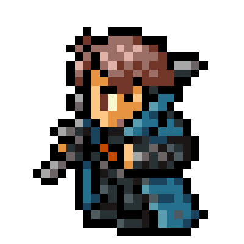

Mod Translation
MTR Addon / Translation
Yunzhu Transit Extension
エレベーターの操作盤や挙動を忠実に再現したMOD（MTR前提）。エレベーターのリアリティが深まるMODです。日本語翻訳をザハが担当しました。
Engineer & Sales Representative at 5H1H0

Japanituremod制作者、Yunzhu Transit Extensionの日本語翻訳者のC'zaha Chell tiaです。
Japanituremodの制作陣、個人開発者として、クリエイティブな活動をしております。
MinecraftのMod開発などを通じ、新しい体験を届けることを目標にしています。
エレベーターの操作盤や挙動を忠実に再現したMOD（MTR前提）。エレベーターのリアリティが深まるMODです。日本語翻訳をザハが担当しました。
日本の家具や家電を追加し、現代建築を彩るMod。幅広い建築が可能になることを目指して開発を行っています。